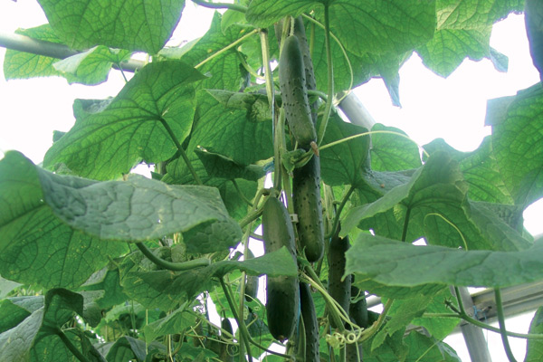
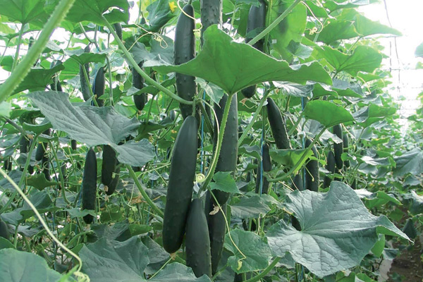

Enki Novi rani hibrid salatara koji je namenjen za gajenje tokom cele godine zbog odlične adaptibilnosti i tolerancije, kako na niske, tako i na visoke temperature. Ima kompaktnu biljku sa generativnim zapercima. Vrlo je snažnog porasta, otvoren, sa manje zaperaka. Izuzetno rodan hibrid salatara, koji zadržava dobar balans i ima konstantnu generativnost, sa slabo izraženim odbacivanjem plodova. Plodovi su vrlo atraktivni, cilindrični, dužine 20-21 cm, uniformnog i stabilnog prečnika i nisu skloni prerastanju (debljanju).

Jazzer Standardni bradavičasti tip salatara, atraktivnih tamno zelenih plodova sa dosta pepeljka. Plodovi su cilindrični dužine 16-18 cm. Masovna berba počinje vrlo rano, a plodonošenje je konstantno i obilno. Biljke nisu bujne, niti imaju puno bočnih zaperaka. Hibrid je tolerantan na virus mozaika krastavca CMV. Treba ga brati vrlo često da bi izbegli odbacivanje zametnutih plodova. Održavati visoku relativnu vlažnost i voditi računa o pravovremenoj zaštiti od pepelnice i tripsa.
Corinto Rani hibrid snažnog porasta, tamno zelenih listova sa malo bočnih zaperaka. Tamno zeleni, cilindrični i atraktivni plodovi su dužine 19-22 cm, bez pojave gorčine. Ovaj hibrid je široko prihvaćen od većineproizvođača zbog toga što je vrlo adaptibilan u uslovima rane proizvodnje u plastenicima i lak za gajenje. Odlične otpornosti na bolesti.